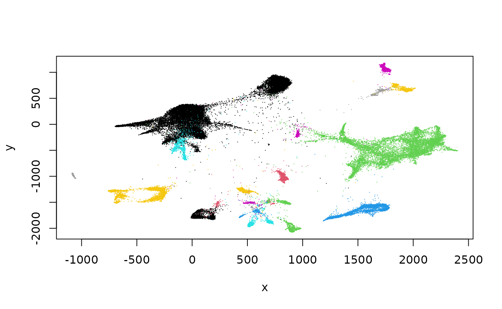

vignettes/A_Data.Rmd
A_Data.RmdThe scRNAseq package includes functions that will retrieve exemplary datasets, place them in a user-defined cache (so that retrievals need not be repeated), and deliver a representation into the workspace.
data(curated_abstdf)
curated_abstdf$pmids = build_anchors(curated_abstdf$pmids)
datatable(curated_abstdf, escape=FALSE)
library(scRNAseq)
zld = ZilionisLungData()
zld## class: SingleCellExperiment
## dim: 41861 173954
## metadata(0):
## assays(1): counts
## rownames(41861): 5S_rRNA 5_8S_rRNA ... snosnR66 uc_338
## rowData names(0):
## colnames(173954): bcIIOD bcHTNA ... bcELDH bcFGGM
## colData names(16): Library Barcode ... used_in_NSCLC_non_immune
## used_in_blood
## reducedDimNames(5): SPRING_NSCLC_all_cells
## SPRING_NSCLC_and_blood_immune SPRING_NSCLC_immune
## SPRING_NSCLC_non_immune SPRING_blood
## mainExpName: NULL
## altExpNames(0):
plot(reducedDim(zld), pch=".", col=factor(zld$`Major cell type`))
The projection is based on Klein’s SPRING.
Exercises: Supply a legend. Use more modern visualization. Investigate second-level cell type assignments.
🧬💻🔥 We are excited to launch #CuratedAtlasQueryR! millions of cells at your fingertips. A thread 🧵.
— Stefano Mangiola (@steman_research) February 22, 2023
The harmonized and reannotated #CELLxGENE #singlecell human #atlas can be
explored and retrieved as #SingleCellExperiment. Please RT!
-> https://t.co/8rwqBqPHMQ pic.twitter.com/2HvHsvmi4H
metadata = get_metadata()
metadata## # Source: table</home/stvjc/.cache/R/CuratedAtlasQueryR/metadata.parquet> [?? x 56]
## # Database: DuckDB 0.7.1 [stvjc@Linux 5.15.0-67-generic:R 4.3.0/:memory:]
## .cell sample_id_db .sample .sample_name assay assay_ontology_term_id
## <chr> <chr> <chr> <chr> <chr> <chr>
## 1 AAACCTGAGAGAC… 8a0fe092868… 5f20d7… D17PrPzF_Vi… 10x … EFO:0009899
## 2 AAACCTGAGTTGT… 8a0fe092868… 5f20d7… D17PrPzF_Vi… 10x … EFO:0009899
## 3 AAACCTGCAGTCG… 02eb2ebcb5f… 5f20d7… D17PrPzF_Vi… 10x … EFO:0009899
## 4 AAACCTGCAGTTC… 02eb2ebcb5f… 5f20d7… D17PrPzF_Vi… 10x … EFO:0009899
## 5 AAACCTGGTCTAA… 8a0fe092868… 5f20d7… D17PrPzF_Vi… 10x … EFO:0009899
## 6 AAACCTGTCGTAC… 8a0fe092868… 5f20d7… D17PrPzF_Vi… 10x … EFO:0009899
## 7 AAACCTGTCTTGT… 8a0fe092868… 5f20d7… D17PrPzF_Vi… 10x … EFO:0009899
## 8 AAACGGGAGTACG… 8a0fe092868… 5f20d7… D17PrPzF_Vi… 10x … EFO:0009899
## 9 AAACGGGAGTAGG… 02eb2ebcb5f… 5f20d7… D17PrPzF_Vi… 10x … EFO:0009899
## 10 AAACGGGAGTGGG… 8a0fe092868… 5f20d7… D17PrPzF_Vi… 10x … EFO:0009899
## # ℹ more rows
## # ℹ 50 more variables: file_id_db <chr>, cell_type <chr>,
## # cell_type_ontology_term_id <chr>, development_stage <chr>,
## # development_stage_ontology_term_id <chr>, disease <chr>,
## # disease_ontology_term_id <chr>, ethnicity <chr>,
## # ethnicity_ontology_term_id <chr>, file_id <chr>, is_primary_data.x <chr>,
## # organism <chr>, organism_ontology_term_id <chr>, …
metadata |> dplyr::count()## # Source: SQL [1 x 1]
## # Database: DuckDB 0.7.1 [stvjc@Linux 5.15.0-67-generic:R 4.3.0/:memory:]
## n
## <dbl>
## 1 28975366Filtering cells by donor, assay, tissue, cell annotation:
single_cell_countsALC =
metadata |>
dplyr::filter(
ethnicity == "African" &
stringr::str_like(assay, "%10x%") &
tissue == "lung parenchyma" &
stringr::str_like(cell_type, "%CD4%")
) |>
get_SingleCellExperiment()## ℹ Realising metadata.## ℹ Synchronising files## ℹ Reading files.## ℹ Compiling Single Cell Experiment.
single_cell_countsALC## class: SingleCellExperiment
## dim: 36229 1571
## metadata(0):
## assays(2): counts cpm
## rownames(36229): A1BG A1BG-AS1 ... ZZEF1 ZZZ3
## rowData names(0):
## colnames(1571): ACAGCCGGTCCGTTAA_F02526_1 GGGAATGAGCCCAGCT_F02526_1 ...
## TACAACGTCAGCATTG_SC84_1 CATTCGCTCAATACCG_F02526_1
## colData names(56): sample_id_db .sample ... n_tissue_in_cell_type
## original_cell_id
## reducedDimNames(0):
## mainExpName: NULL
## altExpNames(0):
head(colData(single_cell_countsALC)[,1:5])## DataFrame with 6 rows and 5 columns
## sample_id_db .sample
## <character> <character>
## ACAGCCGGTCCGTTAA_F02526_1 33cdeb84ae1462d723c1.. 4fc10a6b85e5fa688b25..
## GGGAATGAGCCCAGCT_F02526_1 33cdeb84ae1462d723c1.. 4fc10a6b85e5fa688b25..
## TCTTCGGAGTAGCGGT_F02526_1 33cdeb84ae1462d723c1.. 4fc10a6b85e5fa688b25..
## CCTTACGAGAGCTGCA_F02526_1 33cdeb84ae1462d723c1.. 4fc10a6b85e5fa688b25..
## ATCTACTCAATGGAAT_F02526_1 33cdeb84ae1462d723c1.. 4fc10a6b85e5fa688b25..
## CATCAGACACCGTTGG_F00409_1 c7f14e86df84af9ad171.. 9ef5eab00316c489a363..
## .sample_name assay
## <character> <character>
## ACAGCCGGTCCGTTAA_F02526_1 VUHD92___lung parenc.. 10x 5' v1
## GGGAATGAGCCCAGCT_F02526_1 VUHD92___lung parenc.. 10x 5' v1
## TCTTCGGAGTAGCGGT_F02526_1 VUHD92___lung parenc.. 10x 5' v1
## CCTTACGAGAGCTGCA_F02526_1 VUHD92___lung parenc.. 10x 5' v1
## ATCTACTCAATGGAAT_F02526_1 VUHD92___lung parenc.. 10x 5' v1
## CATCAGACACCGTTGG_F00409_1 VUHD69___lung parenc.. 10x 5' v1
## assay_ontology_term_id
## <character>
## ACAGCCGGTCCGTTAA_F02526_1 EFO:0011025
## GGGAATGAGCCCAGCT_F02526_1 EFO:0011025
## TCTTCGGAGTAGCGGT_F02526_1 EFO:0011025
## CCTTACGAGAGCTGCA_F02526_1 EFO:0011025
## ATCTACTCAATGGAAT_F02526_1 EFO:0011025
## CATCAGACACCGTTGG_F00409_1 EFO:0011025